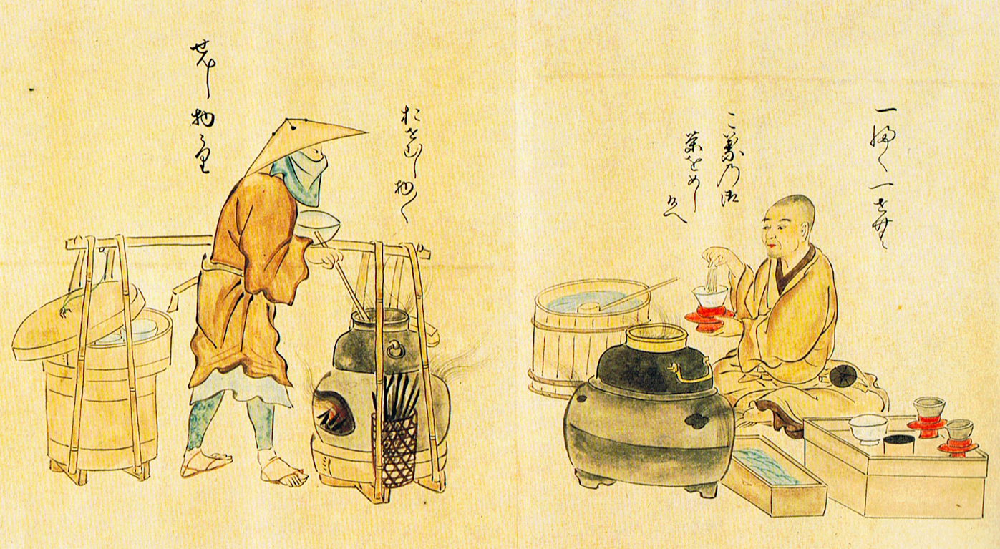

History of Matcha
Matcha originated in China during the Tang Dynasty but became highly popular in Japan during the 12th century. It is closely tied to the Japanese tea ceremony, which emphasizes mindfulness, respect, and aesthetics. Over time, matcha shifted from being used mainly in rituals to becoming part of daily life and global café culture.
